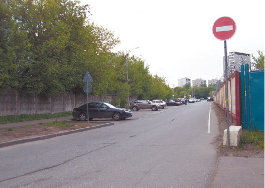
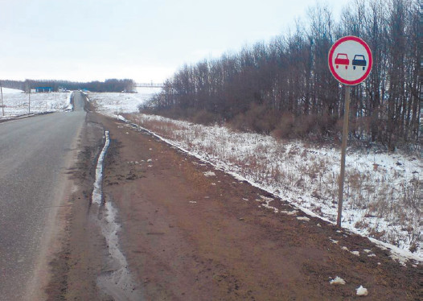

Ошибки при общении с инспектором ГИБДД
По идее, было бы справедливо, если бы на инспекторах ГИБДД был закреплен знак «Прочие опасности», тогда новички за рулем знали бы, с чем имеют дело. А так свежеиспеченный водитель ориентируется в основном на анекдоты о дорожно-постовой службе да на рассказы старших товарищей. Вот только анекдот – это и есть анекдот, а рассказы опытных водителей, касающиеся их отношений с инспекторами ГИБДД, по большей части так же соответствуют действительности, как истории бывалых рыбаков о «в-о-о-т такой!» рыбе. Автору, к примеру, неоднократно приходилось слышать рассказы бывалых о пересечении сплошной осевой линии и остановке прямо на месте нарушения инспектором ГИБДД. Звучало это примерно так: «Ну, развернулся я через сплошную осевую. А что, все равно ночь, тишина, дорога совершенно пустая. Так что ж мне, пять километров до разворота пилить! И тут – инспектор из кустов выскакивает. И, конечно, давай махать полосатой палочкой да свистеть во все звонки. Останавливаюсь. Представляется: сержант такой-то. Вы, мол, нарушили, гражданин водитель, сплошную осевую переехали. Я и спрашиваю: «Парень, я что, сдвинул эту твою сплошную осевую? Сломал ее? Погнул хоть как? Нет! Так что ты ко мне пристал?
Ловил бы настоящих нарушителей!» Он так и остался стоять с открытым ртом, а я дальше поехал».
Подобные же рассказы ходят и о проезде под «кирпич» (рис. 5.4) и т. д. Общее в них одно: водитель поехал дальше (ненаказанный!), а инспектор ГИБДД остался стоять с открытым ртом. Вот только в жизни так не бывает. За подобное обращение к инспектору ГИБДД можно ожидать отнюдь не «открытого рта», а применения санкций, что называется, на всю катушку. И если, скажем, за нарушение положен штраф, то он будет выписан по максимуму. Кроме того, инспектор ГИБДД еще может отыскать пару-тройку дополнительных нарушений, которые тоже будут обложены штрафом в верхнем пределе норматива. Возите ли вы огнетушитель в салоне в пределах досягаемости водителя? А между прочим, должны. Огнетушитель, мирно лежащий в багажнике, не считается. И, кстати, в вашей аптечке имеются все лекарственные препараты, которые оговорены в ПДД? А как у них со сроком годности? То-то же!

Рис. 5.4. Знак «Въезд запрещен» некоторых водителей не останавливает
Что характерно, опытные водители, несмотря на то, что рассказывают направо и налево (в том числе и друг другу) подобные водительские байки, при встрече с инспектором ГИБДД себя так не ведут. Наученные горьким опытом, они уже прекрасно знают правила игры и не интересуются, а что же произошло со сплошной осевой линией в результате наезда.
Так что давайте рассмотрим несколько дорожных ситуаций из серии «Меня остановил инспектор ГИБДД».
Я выехал на полосу встречного движения в неположенном месте (там был знак «Обгон запрещен»). Меня остановил инспектор ГИБДД. Я отказывался от нарушения, но он сказал, что, во-первых, может доказать, что я нарушил, а во-вторых, если я добровольно напишу в протоколе, что нарушил и раскаиваюсь, то в результате отделаюсь только предупреждением. Получилось же так, что я подписал протокол, поверив инспектору, а меня лишили прав на полгода по ч. 4 ст. 12.15 КоАП. Да еще сказали, что ни о каком предупреждении не могло быть и речи. Получается, что инспектор меня обманул?Давным-давно в определенных кругах шутили: «Чистосердечное признание облегчает работу следователя и удлиняет срок». Это следовало бы взять на вооружение всем водителям, которым предлагают «добровольно и чистосердечно» сознаться в совершенном нарушении ПДД в ответ на предложение о смягчении наказания. Прежде чем в сомнительном случае признаваться хоть в чем-либо, а уж тем более в грубом нарушении ПДД, проверьте, какое именно наказание предусмотрено за данное нарушение. К примеру, в случае выезда на полосу встречного движения в нарушение ПДД возможна санкция в виде лишения права управления транспортным средством на срок от четырех до шести месяцев (рис. 5.5). Как видите, ни о каком предупреждении в законе речи нет. И, конечно же, инспектор обманул, когда обещал подобное смягчение наказания. Вообще наказание может быть смягчено исключительно в пределах той статьи законодательства, которая относится к данному (указанному в протоколе!) нарушению.

Рис. 5.5. Нарушение требований знака «Обгон запрещен» влечет лишение прав на срок от четырех до шести месяцев
Меня остановил инспектор ГИБДД (из-за разговора по мобильному телефону за рулем) и, заявив, что я пьян, предложил медицинское освидетельствование. Я, конечно, возмутился, тем более что был совершенно трезв. Тогда инспектор сказал: «Если вы утверждаете, что не пьяны, то пишите отказ – и нам легче, и вам, да еще и отделаетесь минимальным штрафом, объяснив все в суде». Я так и сделал: написал отказ, мотивировав его тем, что трезв. А меня лишили прав! Почему?
Причина проста: в соответствии с действующим законодательством отказ от медицинского освидетельствования карается лишением прав. И к печальным последствиям привело лишь незнание закона. В данном случае дешевле было согласиться на медицинское освидетельствование.
Я ездил на машине в другой город (450 км), где меня остановил инспектор ГИБДД за нарушение Правил. Собирались составить протокол, но инспектор сказал, что дело будет разбираться по месту нарушения. Ездить на разбирательства мне показалось далековато, и я попросту заплатил инспектору, чтобы решить дело без протокола. Кстати сказать, ПДД я не нарушал и думаю, что смог бы это доказать. Но доказательства с учетом расстояния 450 км были бы очень дорогими. Почему нельзя разбирать дело по месту нахождения нарушителя?В соответствии со ст. 29.5 КоАП дело о нарушении ПДД рассматривается по месту его совершения. Однако по вашему ходатайству оно может быть рассмотрено в отделении ГИБДД по месту вашего жительства или по месту регистрации транспортного средства. Отмечу, что место жительства может не совпадать с местом регистрации автомобиля. По вашему ходатайству ГИБДД также выносит определение и пересылает протокол и другие материалы дела по месту, указанному в ходатайстве, где в дальнейшем и принимается решение.
При всем этом нужно учесть, что на время пересылки материалов по месту жительства нарушителя срок давности приостанавливается. Так что инспектор ГИБДД несколько лукавил, когда говорил, что разбирательство дела будет происходить по месту совершения нарушения ПДД в безусловном порядке. Вы могли бы и не платить ему, а позволить составить протокол.
Меня остановил инспектор ГИБДД для проверки документов. Я предъявил ему права, документы на автомобиль, страховой полис ОСАГО. Талон о прохождении техосмотра был закреплен на лобовом стекле автомобиля. Но инспектор потребовал еще и медицинскую справку, а ее у меня с собой не было. Мне выписали штраф за отсутствие необходимых документов. Получается, что медицинскую справку нужно возить с собой так же, как и права?Нет, не нужно. В соответствии с п. 2.1.1 ПДД водитель обязан иметь при себе и по требованию сотрудников милиции передавать им для проверки:
? водительское удостоверение на право управления транспортным средством соответствующей категории, а в случае изъятия в установленном порядке водительского удостоверения – временное разрешение;
? регистрационные документы и талон о прохождении государственного технического осмотра на данное транспортное средство, а при наличии прицепа – и на прицеп;
? документ, подтверждающий право владения, или пользования, или распоряжения данным транспортным средством, а при наличии прицепа – и на прицеп – в случае управления транспортным средством в отсутствие его владельца;
? в установленных случаях путевой лист, лицензионную карточку и документы на перевозимый груз, а при перевозке крупногабаритных, тяжеловесных и опасных грузов – документы, предусмотренные правилами перевозки этих грузов;
? страховой полис обязательного страхования гражданской ответственности владельца транспортного средства в случаях, когда обязанность по страхованию своей гражданской ответственности установлена федеральным законом.
В случаях, прямо предусмотренных действующим законодательством, иметь и передавать для проверки работникам Федеральной службы по надзору в сфере транспорта лицензионную карточку, путевой лист и товарно-транспортные документы.
Как видите, ни о какой медицинской справке речи нет. Инспектор ГИБДД не имел права ее требовать, и штраф можно было не платить – если бы только вы знали свои права и имели при себе экземпляр ПДД, чтобы предъявить этот документ зарвавшемуся инспектору.